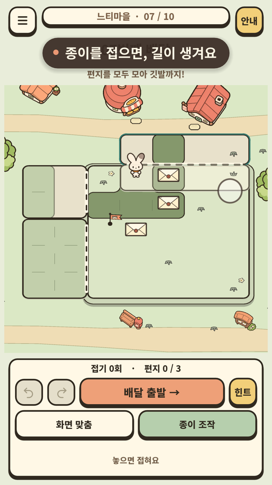
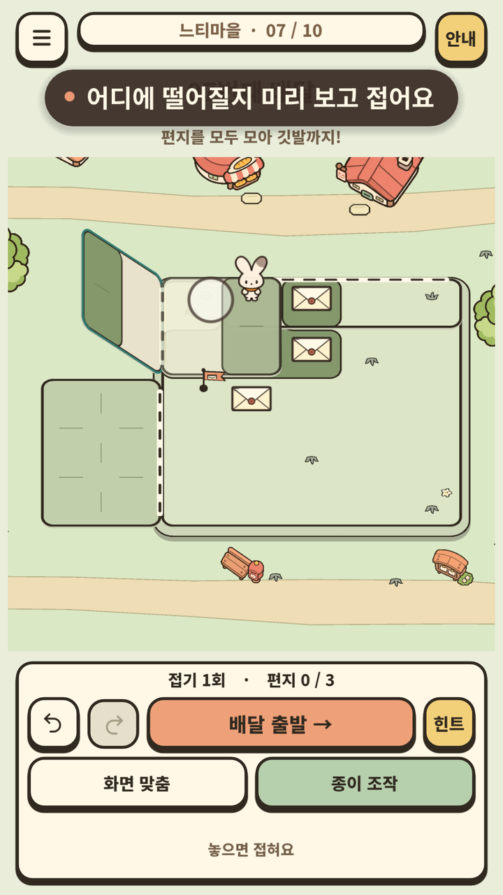
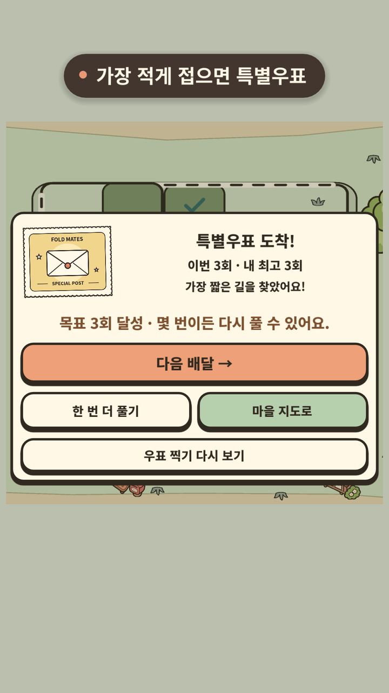
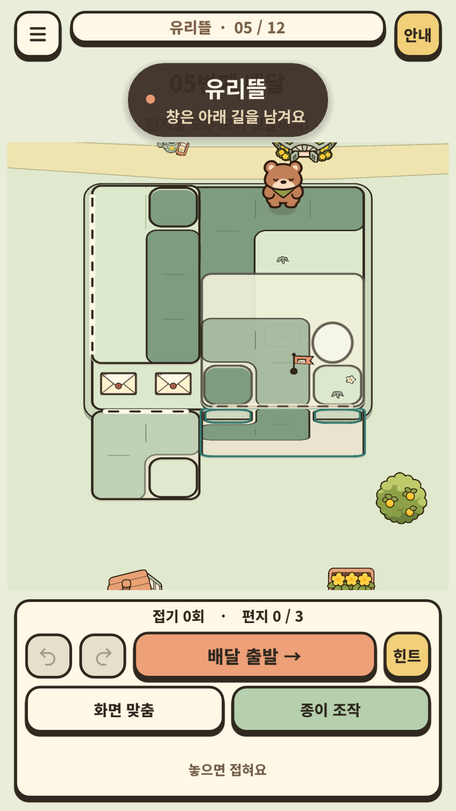
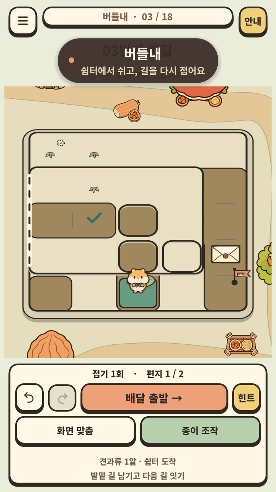
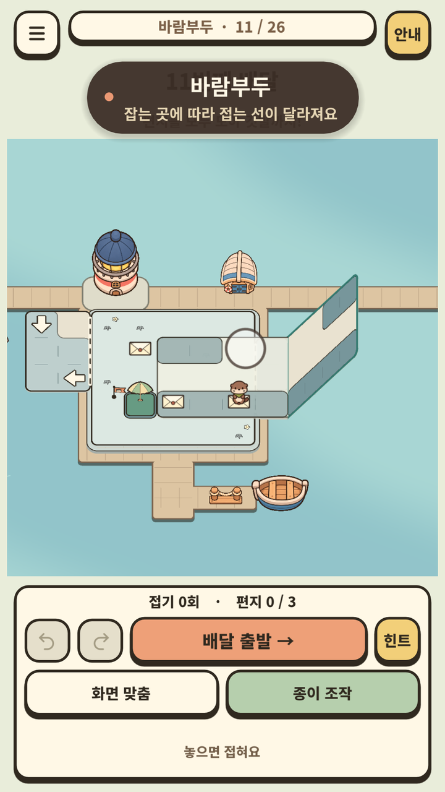
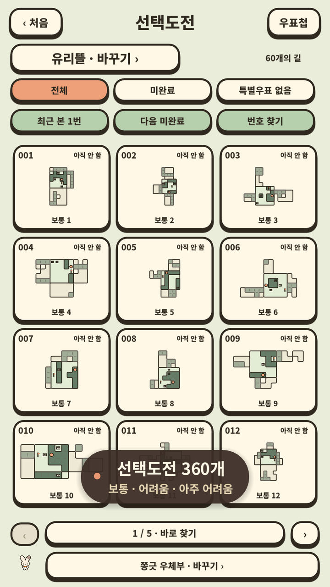
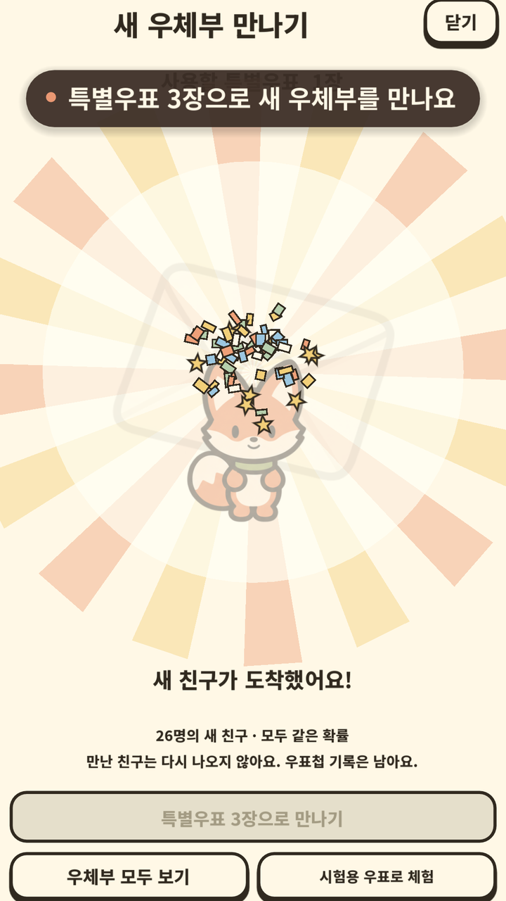
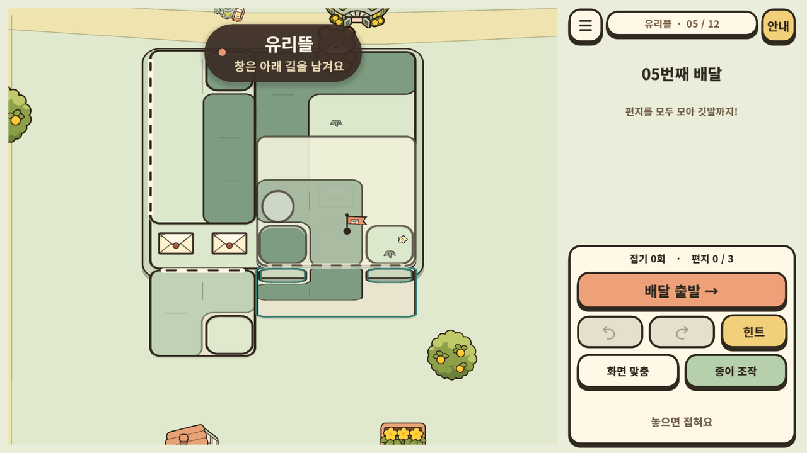
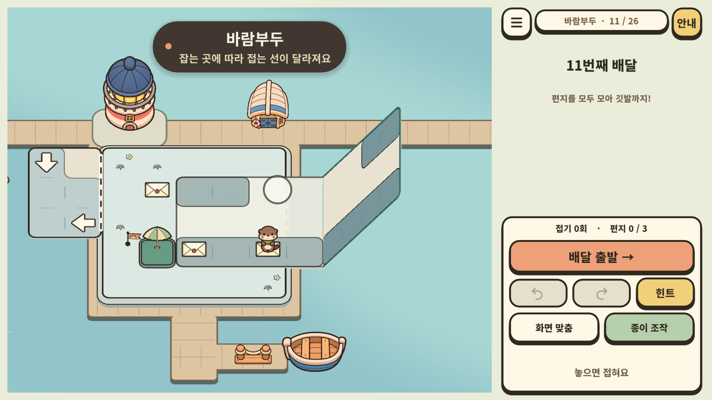

Fold Mates
종이를 접으면 길이 생겨요. 우체부 친구와 편지를 모아 깃발까지 배달하는 캐주얼 퍼즐.
이렇게 놀아요
한 판은 5×5 크기의 작은 지도. 몇 번만 접으면 되지만, 무엇을 먼저 접을지가 퍼즐이에요.
1
종이를 잡고 접기
종이를 잡아 들면 어디에 떨어질지 미리 보여요. 접힌 종이에 그려진 길이 아래 길과 이어져요.
2
순서를 생각하기
나중에 접은 종이가 먼저 접은 길을 덮어요. 빈 여백도 무언가를 가리는 덮개가 될 수 있어요.
3
배달 출발
길이 이어지면 우체부가 편지를 모두 모아 깃발까지 걸어가요. 가장 적게 접으면 특별우표!
화면
옆으로 넘겨 보세요.










여섯 마을, 새로운 규칙
마을을 지날 때마다 접기에 새 규칙이 하나씩 더해져요. 마을마다 함께 걷는 우체부 친구도 달라요.
10판
느티마을
종이를 접어 길을 잇는 기본. 순서가 왜 중요한지 배워요.
12판
유리뜰
창이 뚫린 종이. 접어도 창 아래의 길은 그대로 보여요.
18판
버들내
쉼터에서 한숨 돌리고, 발밑 길만 남긴 채 다음 길을 다시 접어요.
22판
바느질 골목
잡는 곳에 따라 접는 선이 달라지는 선택 접기.
26판
바람부두
화살표 길과 함께, 지금까지의 규칙을 엮어요.
30판
우편언덕
모든 규칙이 모이는 마지막 마을.
규모와 품질
118마을 배달 판
360선택도전 판
보통·어려움·아주 어려움
보통·어려움·아주 어려움
6마을과 우체부 친구들
0운으로 풀리는 판
(전 판 자동 검사)
(전 판 자동 검사)
- 모든 판을 자체 검사 도구로 끝까지 풀어 봤어요. 되돌릴 수 없는 막다른 상태가 없고, 아무 첫 수나 눌러서 풀리는 판도 없어요.
- 특별우표(가장 적게 접기) 풀이가 실제로 있는지, 힌트만 따라가도 그 횟수에 닿는지 확인했어요.
- 막힐 때는 단계별 힌트, 되돌리기·다시 하기가 언제나 있어요.
- 진행·우표·우체부는 기기에 저장돼요. 회원가입 없이 바로 시작해요.
원스토어 베타에서 확인하고 싶은 것
- 처음 하는 분들이 접기 조작을 바로 이해하는지
- 어느 판에서 막히고, 어디서 그만두는지
- 마을마다 난이도가 자연스럽게 오르는지
- 특별우표와 우체부 친구가 계속 할 동기가 되는지
| 목표 구간 | 버들내 6번째 배달 완료 (모두 28판) |
|---|---|
| 설문 | 목표를 달성하면 게임 안에서 설문이 열려요 |
| 플레이 기록 | 동의한 만 14세 이상 이용자에게서만, 이름·전화번호 없이 (개인정보처리방침) |
정보
| 장르 | 캐주얼 퍼즐 (1인 플레이, 오프라인 플레이 가능) |
|---|---|
| 플랫폼 | Android 7.0 이상 (원스토어 베타). iOS·웹은 내부 테스트 중 |
| 가격 | 베타 무료 · 광고와 인앱 결제 없음 |
| 엔진 | Godot 4 |
| 개발 | HonJa (1인 개발) · 개발자 소개 |
| 문의 | foldmates.help@gmail.com |